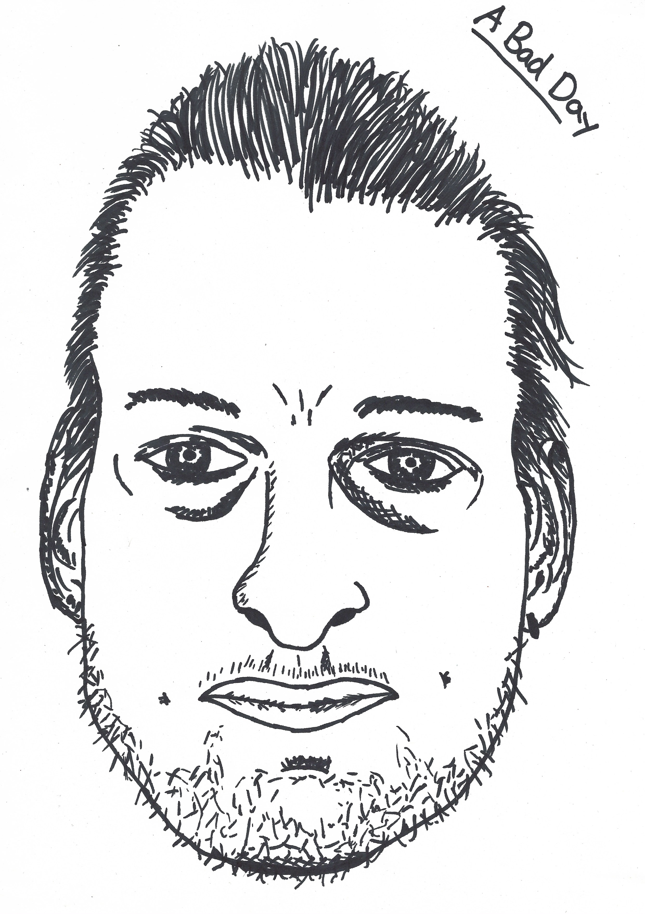
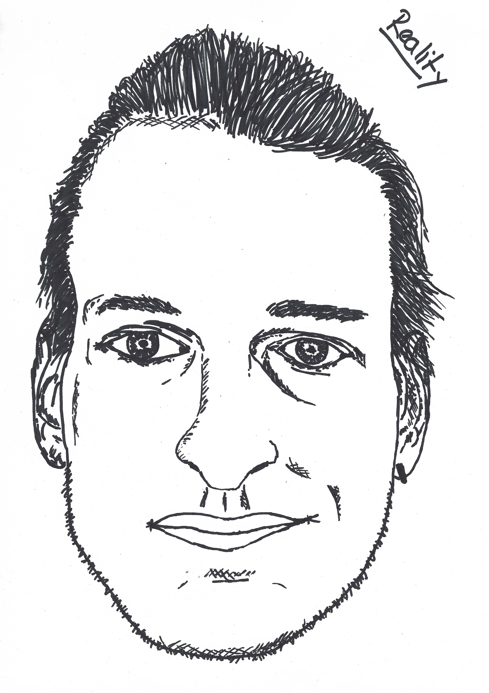
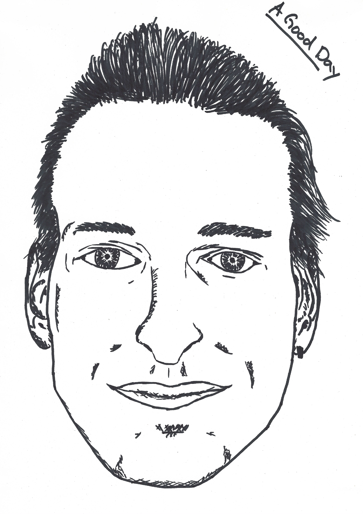
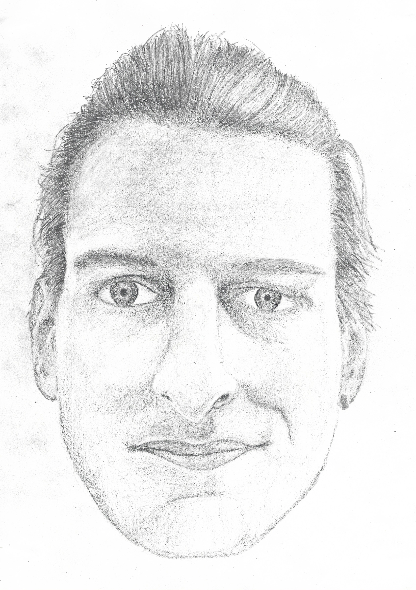
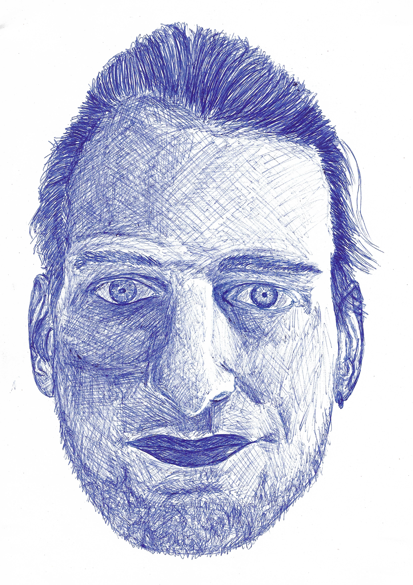
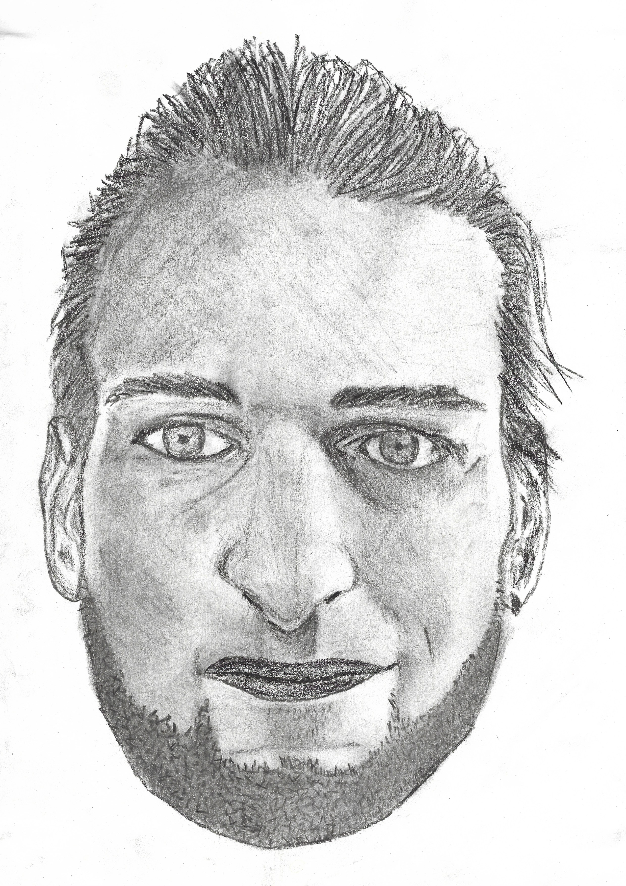
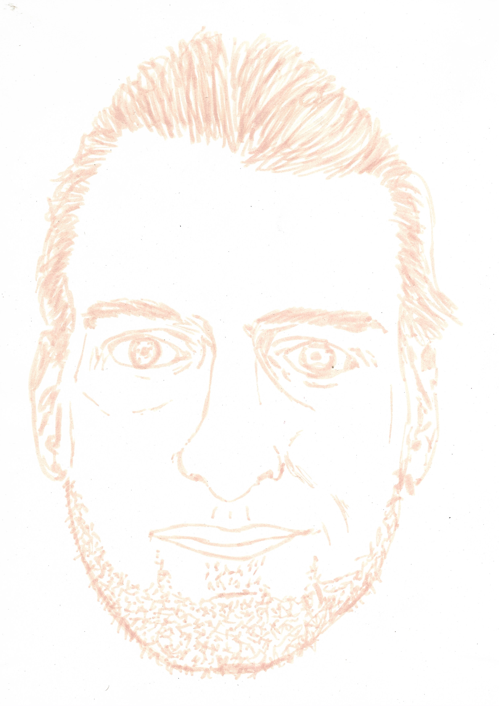

Das ursprüngliche Projekt sollte eine Darstellung davon sein wie sich Selbstwahrnehmung mit der Laune ändert, aber ich habe schlussendlich mehr Zeit damit verbracht das selbe Portrait mit verschiedenen Utensilien zu zeichnen.
Das "echte" Portrait habe ich mithilfe eines (improvisierten) Leuchkasten und einem Photo gezeichnet, welches ich dann als Vorlage für die anderen Bilder benutzt habe.
|  |  |  |
Wiedrum mithilfe eines Leuchkasten für die Umrisse.
|  |  |
|  |  |